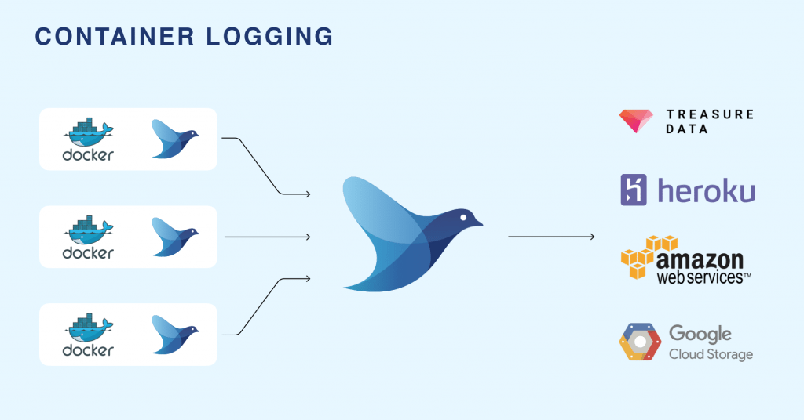
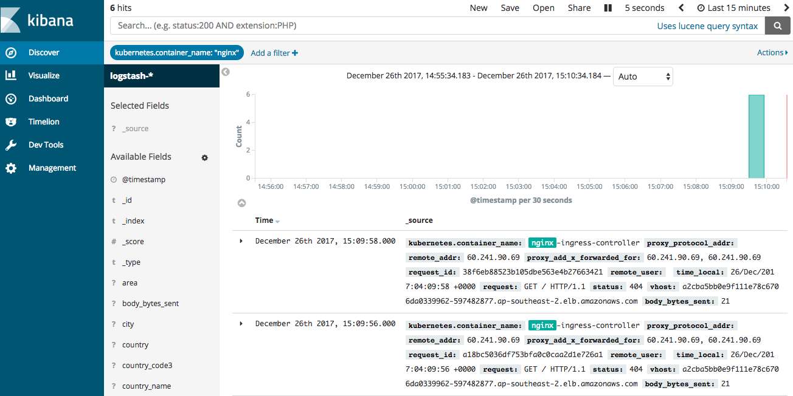
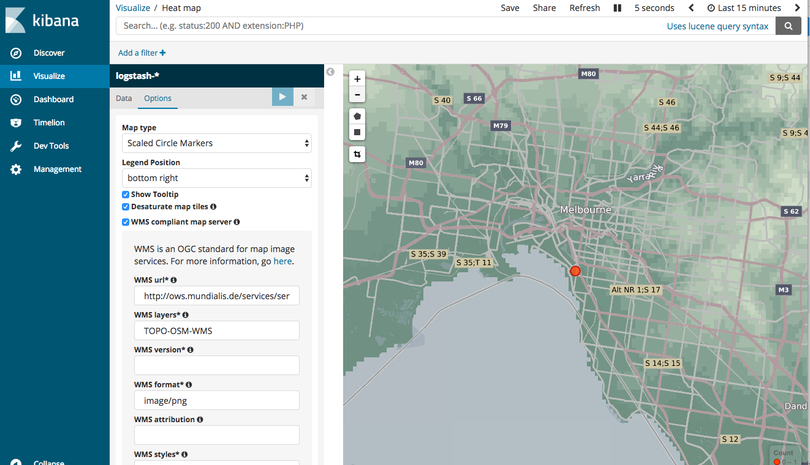
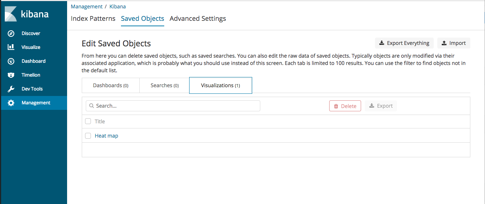
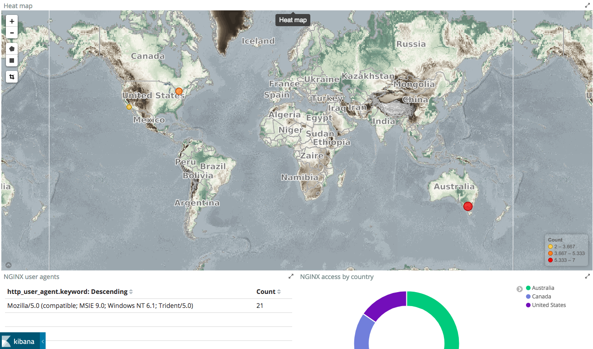

TLDR
The solution I have used in the past for logging in kubernetes clusters is EFK (Elastic-Fluentd-Kibana). Alot of you have probably heard of ELK stack but I find that logstash is more heavyweight and does not provide the same output plugins as fluentd.
Elasticsearch
Elasticsearch 6 has just been announced with some major performance improvements.
You have a few options to deploy elasticsearch - elastic cloud or spin up your own ES cluster in kubernetes. But I have decided to go with the AWS managed service. It now has VPC support and the new release 6.0.
The reason being that administrating Elasticsearch can be a lot of work, as many people experienced with the system will tell you it can be tricky to keep running smoothly and that it’s a task better outsourced to an external service.
I recently read dubsmash story https://stackshare.io/dubsmash/dubsmash-scaling-to-200-million-users-with-3-engineers and how they focus on the product deliverables and not infrastructure. If you have a small team or not in the business of managing services such as ES, i find its best to outsource..
Following the 12 factor principles for logging https://12factor.net/logs all applications that are containerised (using docker) should log to STDOUT.
A twelve-factor app never concerns itself with routing or storage of its output stream. It should not attempt to write to or manage logfiles. Instead, each running process writes its event stream, unbuffered, to stdout.
Whether your using winston for nodeJS or console appender for spring boot, this is the recommended way.
Every pod in a K8S cluster has its standard output and standard error captured and stored in the /var/log/containers/ node directory.
Now you need a logging agent ( or logging shipper) to ingest these logs and output to a target.
FluentD

Fluentd is an open-source framework for data collection that unifies the collection and consumption of data in a pluggable manner. There are several producer and consumer loggers for various kinds of applications. It has a huge suite of plugins to choose from.
Fluentd will be deployed as a daemonset on the kubernetes cluster.
Kubernetes logs the content of the stdout and stderr streams of a pod to a file. It creates one file for each container in a pod. The default location for these files is /var/log/containers . The filename contains the pod name, the namespace of the pod, the container name, and the container id. The file contains one JSON object per line of the two streams stdout and stderr.
A DaemonSet ensures that a certain pod is scheduled to each kubelet exactly once. The fluentd pod mounts the /var/lib/containers/ host volume to access the logs of all pods scheduled to that kubelet.
Whats missing - Geo
I found with the examples online for fluentd daesmonset there was none that supported geoip. Coreos offering and fluentd official kubernetes daemonset do not provide this feature.
Geoip is a very useful tool when inspecting access logs through kibana. I use nginx ingress controller in kubernetes and I wanted to see where incoming requests arose geographically.
Knowing from where in the world people are accessing your website is important not only for troubleshooting and operational intelligence but also for other use cases such as business intelligence
Ingress and Nginx
I use nginx as a reverse proxy behind AWS ELB to manage my routing. By default, nginx does not output to json. And instead of figuring out the fluentd nginx parser I decided to configure nginx to enable json logging.
Sample conf can be seen below:
kind: ConfigMap
apiVersion: v1
metadata:
name: nginx-configuration
namespace: ingress-nginx
labels:
app: ingress-nginx
data:
use-proxy-protocol: "false"
log-format-escape-json: "true"
log-format-upstream: '{"proxy_protocol_addr": "$proxy_protocol_addr","remote_addr": "$remote_addr", "proxy_add_x_forwarded_for": "$proxy_add_x_forwarded_for",
"request_id": "$request_id","remote_user": "$remote_user", "time_local": "$time_local", "request" : "$request", "status": "$status", "vhost": "$host","body_bytes_sent": "$body_bytes_sent",
"http_referer": "$http_referer", "http_user_agent": "$http_user_agent", "request_length" : "$request_length", "request_time" : "$request_time",
"proxy_upstream_name": "$proxy_upstream_name", "upstream_addr": "$upstream_addr", "upstream_response_length": "$upstream_response_length",
"upstream_response_time": "$upstream_response_time", "upstream_status": "$upstream_status"}'
Fluentd docker image
I then extended the fluentd debian elasticsearch docker image to install the geo-ip plugin and also update the max mind database.
Docker Image can be found here on docker hub. Tag is v0.12-debian-elasticsearch-geo
docker pull shanelee007/fluentd-kubernetes:v0.12-debian-elasticsearch-geo
Now I needed to amend the fluentd config to filter my nginx access logs and translate ip address to geo co-ordinates.
Sample config in the yaml file for daemonset with updated database is
geoip-filter.conf: |
<filter kube.ingress-nginx.nginx-ingress-controller>
type geoip
# Specify one or more geoip lookup field which has ip address (default: host)
# in the case of accessing nested value, delimit keys by dot like 'host.ip'.
geoip_lookup_key remote_addr
# Specify optional geoip database (using bundled GeoLiteCity databse by default)
geoip_database "/home/fluent/GeoLiteCity.dat"
# Set adding field with placeholder (more than one settings are required.)
<record>
city ${city["remote_addr"]}
lat ${latitude["remote_addr"]}
lon ${longitude["remote_addr"]}
country_code3 ${country_code3["remote_addr"]}
country ${country_code["remote_addr"]}
country_name ${country_name["remote_addr"]}
dma ${dma_code["remote_addr"]}
area ${area_code["remote_addr"]}
region ${region["remote_addr"]}
geoip '{"location":[${longitude["remote_addr"]},${latitude["remote_addr"]}]}'
</record>
# To avoid get stacktrace error with `[null, null]` array for elasticsearch.
skip_adding_null_record true
# Set log_level for fluentd-v0.10.43 or earlier (default: warn)
log_level info
# Set buffering time (default: 0s)
flush_interval 1s
</filter>
I also updated the elasticsearch template to version 6 as there was issues with version 5.
Now to the fun part... testing it out!
Try it yourself
This tutorial can be executed in less than 15 minutes, as log as you already have:
Kubernetes cluster up
Nginx ingress installed
Installing
Github project for creating all resources in kubernetes can be found at https://github.com/shavo007/k8s-ingress-letsencrypt/tree/master
To create the namespace and manifests for logging, the only change you need is to update the elasticsearch endpoint in the configmap.
File is located at https://github.com/shavo007/k8s-ingress-letsencrypt/blob/master/resources/logging/fluentd-configmap.yaml#L291
Then you can create the resources.
Kubectl aliases
For the commands below I am using bash aliases. Aliases save me alot of time when I am querying a cluster. You can find the github project here
ka resources/logging --record
Verify the pods are created
kgpon logging
If you have the dashboard installed you can inspect the logs there or you can tail the logs from the command line using kubetail
kubetail fluentd -n logging
Kibana
Now access kibana - GUI for elasticsearch
You should now see your logs ingested in elasticsearch.

Tile map visualization
There is a limitation with managed service and tile map view. I customized the settings to use WMS compliant map server. See below:

Once you pick the pattern, and assuming your geopoints are correctly mapped, Kibana will automatically populate the visualisation settings such as which field to aggregate on, and display the map almost instantly.
I have defined a visualisation for heatmap. This helps in visualizing geospatial data. You can go to management and import the json file from here https://github.com/shavo007/k8s-ingress-letsencrypt/blob/master/resources/assets/export.json
This includes multiple visualizations and a dashboard.

Inaccurate Geolocation
You may find the IP is matched to an inaccurate location. Be aware that the free Maxmind database that is used is “comparable to, but less accurate than, MaxMind’s GeoIP2 databases”, and, “IP geolocation is inherently imprecise. Locations are often near the center of the population.” See the MaxMind site for further details.
Widgets
You can build up more widgets, such as url count or count by country.

Cleanup of log indices
For cleanup of old log indices there is a tool called curator. I found a serverless option https://github.com/cloudreach/aws-lambda-es-cleanup and created the lambda function via terraform.
You can easily schedule the lambda function to cleanup log indices greater than x no. of days.
And thats it! Stay tuned for more posts on kubernetes.